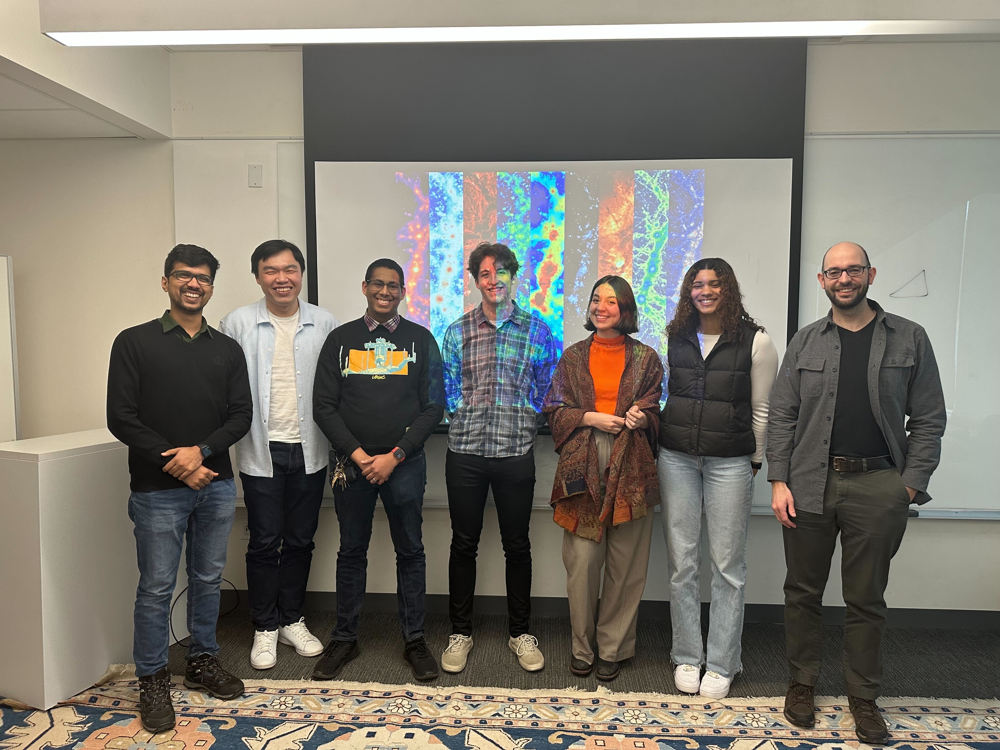
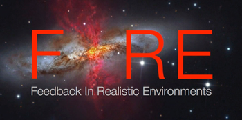
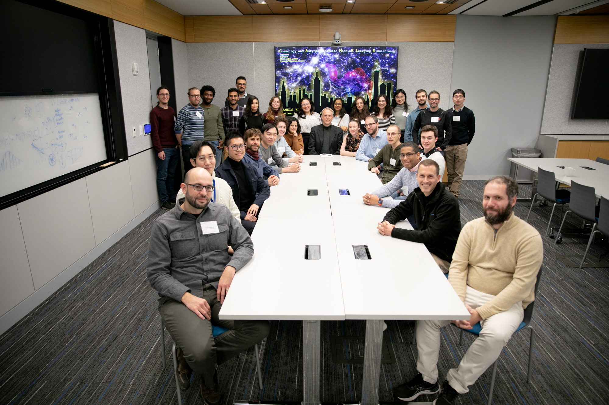

Collaborations
Teams
I have been fortunate enough to work with many great people during my time at UConn. I have worked with people from UConn, the Flatiron Institute, Northwestern, and Yale. I have also worked with people from the Feedback In Realistic Environments (FIRE) collaboration and from the Cosmology and Astrophysics with MachinE Learning Simulations (CAMELS) collaboration.
UConn
I am a part of the UConn Galaxy Formation group led by my PhD advisor Daniel Anglés-Alcázar, where we work with simulations to understand the multi-scale physical processes that govern galaxy evolution, from the growth and impact of feedback from central supermassive black holes to the large scale structure of the Universe.
FIRE Collaboration
I have primarly worked with FIRE simulations through the duration of my thesis. The FIRE project seeks to develop and explore cosmological simulations of galaxy formation that directly resolve the interstellar medium of individual galaxies while capturing their cosmological environment. The FIRE project is led by a founding core group consisting of Phil Hopkins (Caltech), Claude-André Faucher-Giguère (Northwestern), Dušan Kereš (UC San Diego), and Eliot Quataert (Princeton).
CAMELS Collaboration
I have worked briefly on the CAMELS collaboration using their simulations to look into the impact of cosmological and astrophysical parameters on the cosmic web. CAMELS is a collaboration of cosmologists and astrophysicists who are using a suite of cosmological hydrodynamic simulations varying cosmological and astrophysical parameters to use machine learning to efficiently calibrate subgrid parameters in cosmological hydrodynamic simulations to match a set of observations.
People
Here are some of the people I have worked with during my time at UConn:
| Name | Position | Institution |
|---|---|---|
| Dr. Daniel Anglés-Alcázar | Advisor | UConn |
| Dr. Claude-André Faucher-Giguère | Collaborator | Northwestern |
| Dr. Eliot Quataert | Collaborator | UC Berkeley |
| Dr. Philip Hopkins | Collaborator | Caltech |
| Dr. Andrew Wetzel | Collaborator | UC Davis |
| Dr. Dušan Kereš | Collaborator | UC San Diego |